Get started
Role Center
In order to use Latvian Cash Management Localization, no specific role center is required, because the functionality can be accessed via search pane, whereas printout buttons are embedded inside ribbon under the tab ACTIONS.
Configuration package import
Basic necessary system setup for the use of Latvian Cash Management Localization is created, when applying the configuration package LVI.LVI.CASH .
- Click on the button Search for Page or Report...

- Type Configuration Packages and select Configuration Packages from Lists

- Select LVI.LVI.CASH package from list of Config. Packages and press Apply Package.

Configuration package ensures the following information:
- General Journal Template (KASESGRAM)
- Source Code (CASHBOOK)
- General Journal Batch (IENEMUMI for cash Incomes, IZDEVUMI for cash payments)
- Source Code Setup
- No.Series (KIO, KZO)
- No.Series Lines (for KIO, KZO)
Permissions Sets
Use of Latvian Cash Management Localization requires the following standard permission sets to be assigned for the user:
- D365 JOURNALS, EDIT
- D365 JOURNALS, POST
Pre-requisites
The following information should be completed after importing configuration package:
- Create employee card, who is responsible for Petty Cash
- Complete Company Information
- Create Bank Account Card per each Petty Cash location Proceed with following detailed steps:
Click on the button Search for Page or Report...
Type Employee and select Employees from Pages and Tasks 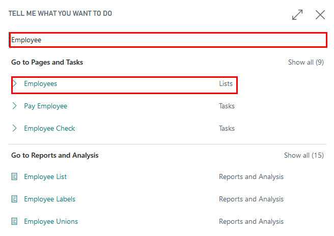
Create new employees who is responsible for petty cash transactions: 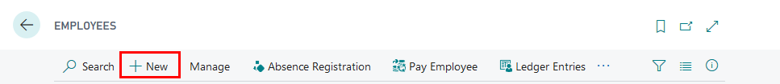
Complete No., Name, Surname, Job Title fields 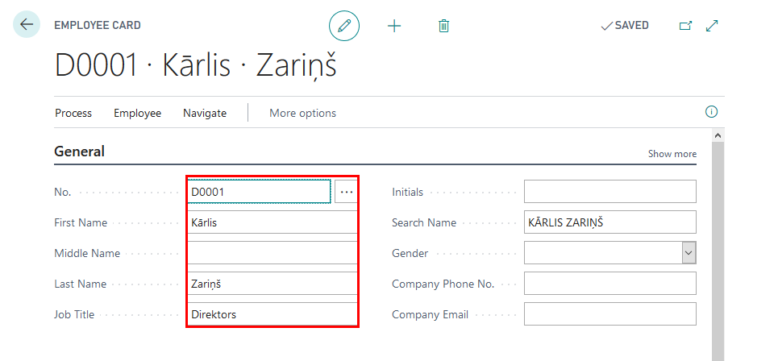
Click on the button Search for Page or Report...
Type Company Information and select Company Information from Pages and Tasks

Complete Company Information by entering:
- Name
- Address
- Post Code
- Country
- Registration No.
- VAT Registration No.

- Create New Bank Account Posting Group for Petty cash: You use bank account posting groups to create linkages between your bank accounts and the central financial statements in the general ledger.
To set up bank account posting groups
a. Click on the button Search for Page or Report...
b. Enter Bank Account Posting Groups and then choose the related link.
 c. Press New to create a relevant bank account posting group.
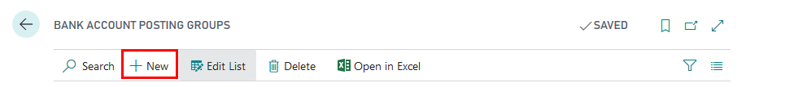
d. Enter the code for the group that you want to set up in the Code field. The code should be descriptive. You can use both numbers and letters. In the G/L Bank Account No. field, enter the desired account
c. Press New to create a relevant bank account posting group.
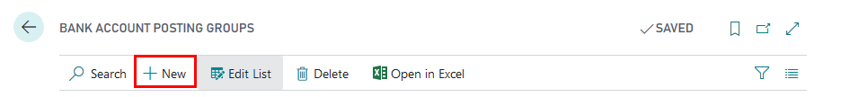
d. Enter the code for the group that you want to set up in the Code field. The code should be descriptive. You can use both numbers and letters. In the G/L Bank Account No. field, enter the desired account

- Complete Bank Account information (per each bank account separately)
a. Click on the button Search for Page or Report...
b. Type Bank Accounts and select Bank Accounts from Pages and Tasks
 c. Press New, in order to create New Bank Account card per Petty Cash location
c. Press New, in order to create New Bank Account card per Petty Cash location
 d. Complete Bank Account Card information with Name, Address details
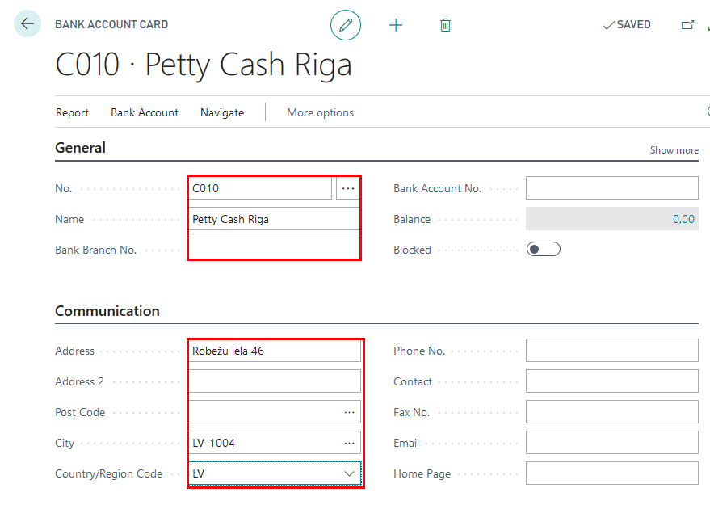
d. Complete Bank Account Card information with Name, Address details
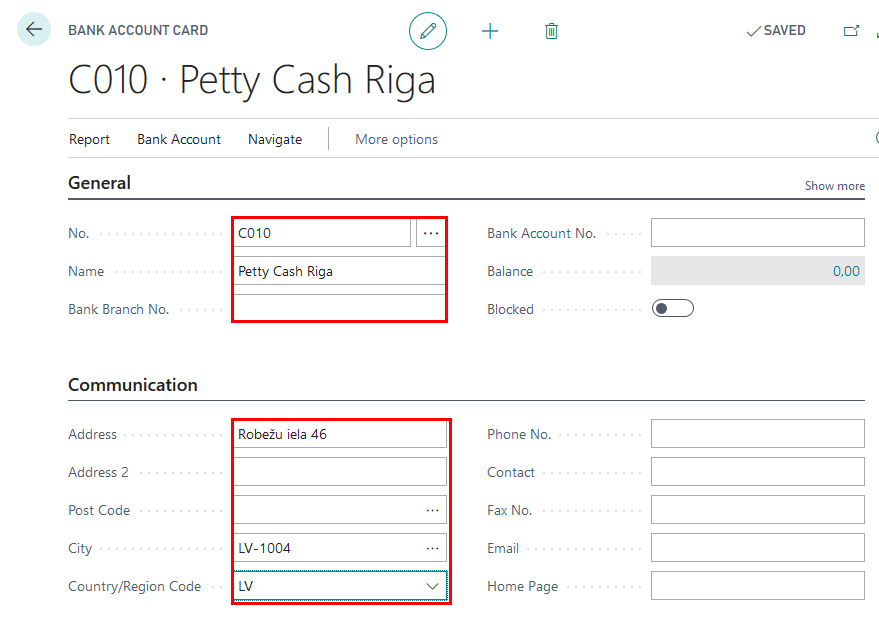
e. Complete Bank Account Card information with Currency Code (if differs from Local Currency) and Bank Account Posting Group (specifies the asset account for cash transactions)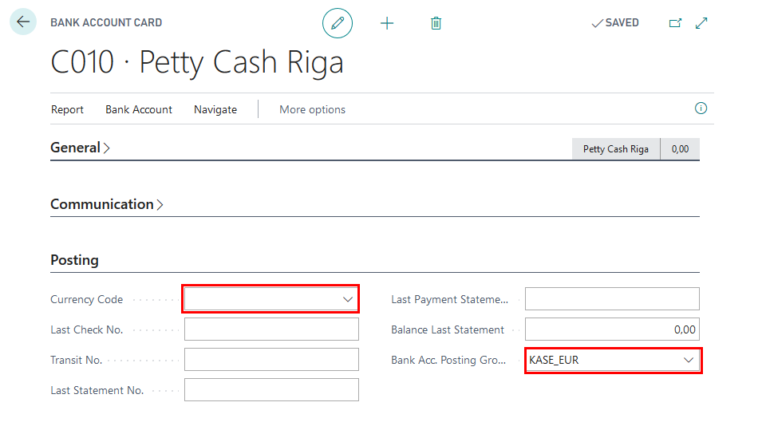
f. Complete Bank Account Card information with following information:
- Account Type- select Cash Desk
- Cashier No.- select an employee from the List of Employees, who is responsible for petty cash operations for this location
- Accountant No. - select an employee from the List of Employees, who holds the position of an accountant

Setup
To set up Cash Book Journal batches
Cash Income Orders and Cash Payment Orders require to have separate Cash Book Journal batches.
- Click on the button Search for Page or Report...
- Type Cash Book Journals and select Cash Book Journals from Tasks

- Open Cash Book Journal batches

- Review New Cash Book Journal Batches created for Cash Income Orders (IENEMUMI) and Cash Payment Orders (IZDEVUMI)
- Complete Name, Description of new Cash Book Journal Batches
- Review that Balancing Account Type is set to Bank Account,
- Set Balancing Account No. to Bank Account used for Petty Cash (See Pre-requisites)
- Set No. Series per each Cash Book Journal Batch 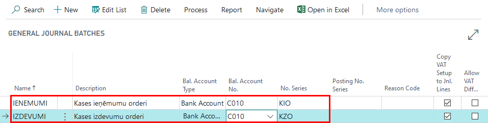
How to use
How to use: Cash Book Journal
LV Cash Book Journal is used for entering, posting and printing Cash Income Orders and Cash Payment Orders. Appropriate Batch required to be selected for each Cash Register. Information required:
Posting date- date when the transaction is posted
Document Type-
- Payment- used for Cash Income Orders
- Refund- used for Cash withdraw
Document No. - sequential number of the Cash Income/Payment Order, usually populated from Cash Book Journal Batch No.Series
Account Type-
- Use Customer for receiving petty cash payments from Customers or giving a customer refund; the transaction shall appear in Customer Ledger Entries
- Use Vendor for paying petty cash to Vendors or receiving a refund from a Vendor; the transaction shall appear in Customer Ledger Entries
- Use G/L Account for registering Cash-In-Transit or miscellaneous expenses
Account No.- select a definite Customer/Vendor/G/L account from a list, based on the Account Type selected in previous step
Description- define the description to be displayed in Cash Income/Payment Orders
Employee No.- select an employee from List Of Employees who receives or provides petty cash
Person Identity No. - define the Identity No. of the counterparty
Person Ident. Doc. Info - define the Identity document information
Attachment Description - text field for any additional notes to be displayed in Cash Income/Payment Order
Debit Amount-
Credit Amount-
Amount-
Bal.Account Type- from Bank Accounts (Cash Desk)
Bal. Account No.- number of Cash Desk
How to use: Create Cash Payment Order
Latvian Cash Management Localization ensures possibility to create Cash Payment Orders in Dynamics 365 Business Central and print them, in order to be compliant with Latvia local legislation requirements.
Purpose: Petty Cash Payment Orders require to be registered in the system with ability to provide a correct printout per transaction requested.
Available for printing from: reports can be printed from Cash Book Journals. Particular Print button Cash Payment Order is located in the Ribbon under the TAB Process.
Also Cash Payment Order can be printed for a posted transaction, using report Cash Payment Order from Reports and Analysis with a filter of Bank Ledger Entry.

Pre-requisites: Cashier and Accountant need to be specified in Bank Account Card; Bank Account Card should have correct Bank Posting Group assigned; fields Person Identity No. and Person Identity Doc. No. fields are mandatory to be completed. In Cash Book Journal batch IZDEVUMI a line needs to be created
- Document Type: Payment
- Amount: Positive

Printing Options: the following printing options are available for this printout:
- Print Received Information in words – when selected, the amount in words is printed next to section Received of the report
Also a filter on Gen. Journal Line can be applied, when creating the report from Cash Book Journal.

When the printing options are selected, it is possible to use standard Send To…, Print, Preview functions. 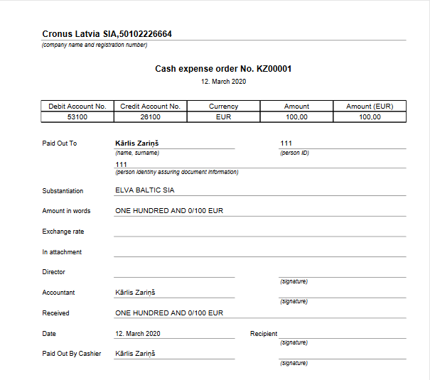
How to use: Create Cash Income Order
Latvian Cash Management Localization ensures possibility to create Cash Income Orders in Dynamics 365 Business Central and print them, in order to be compliant with Latvia local legislation requirements.
Purpose: Petty Cash Income Orders require to be registered in the system with ability to provide a correct printout per transaction requested.
Available for printing from: reports can be printed from Cash Book Journals. Particular Print button Cash Income Order is located in the Ribbon under the TAB Process.
Also Cash Income Order can be printed for a posted transaction, using report Cash Income Order from Reports and Analysis.
Pre-requisites: Cashier and Accountant need to be specified in Bank Account Card; Bank Account Card should have correct Bank Posting Group assigned; fields Person Identity No. and Person Identity Doc. No. fields are mandatory to be completed. In Cash Book Journal batch IENEMUMI a line needs to be created
- Document Type: Payment
- Amount: Negative
 Output Options: the following printing options are available for this printout- not available.
A filter on Gen. Journal Line can be applied, when creating the report from Cash Book Journal.
Output Options: the following printing options are available for this printout- not available.
A filter on Gen. Journal Line can be applied, when creating the report from Cash Book Journal.
 When the printing options are selected, it is possible to use standard Send To…, Print, Preview functions.
When the printing options are selected, it is possible to use standard Send To…, Print, Preview functions.

How to use: Print Cash Book
Latvian Cash Management Localization ensures possibility to register Cash Income Orders and Cash Payment Orders in Dynamics 365 Business Central and at the end of the period show all particular petty cash transactions in one report- Cash Book in order to be compliant with Latvia local legislation requirements.
Purpose: Cash Book report shows all petty cash transactions per period.
Available for printing from: reports can be printed from Cash Book Journals. Particular Print button Cash Payment Order is located in the Ribbon under the TAB Process.
Available for printing from: Cash Book can be printed for a posted transactions, using report Book from Reports and Analysis.

Pre-requisites: Bank Account used for Petty Cash has Cash Income or Cash Payment Orders posted in specific selected period.
Output Options: the following printing options are available for this printout.
- Report No. – enter a specific number that shall appear on the Cash Book printout A filter on Gen. Journal Line can be applied, when creating the report from Cash Book Journal.
- No. - select bank account with type Cash Desk
- Date filter - enter period per which the Cash Book is being prepared
When the printing options are selected, it is possible to use standard Send To…, Print, Preview functions.
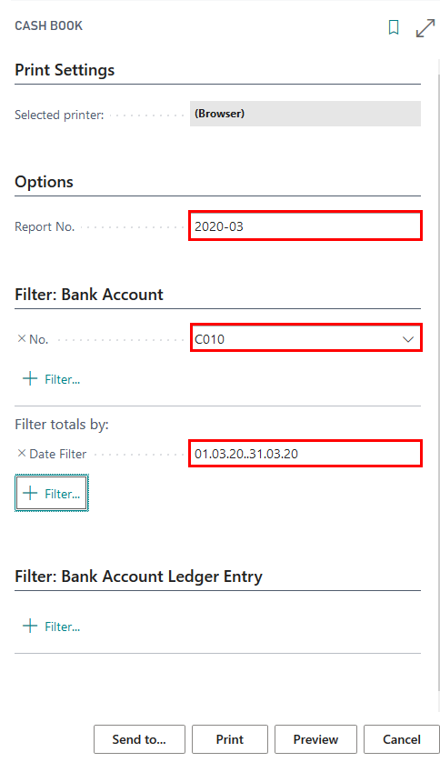 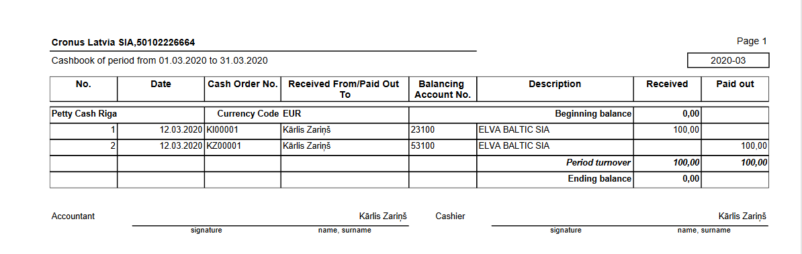